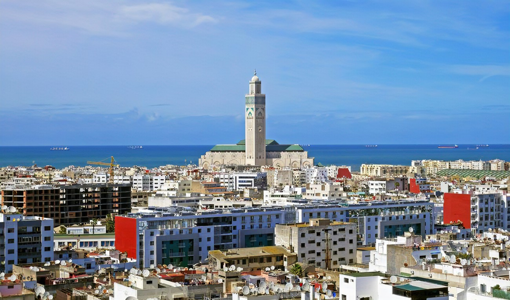
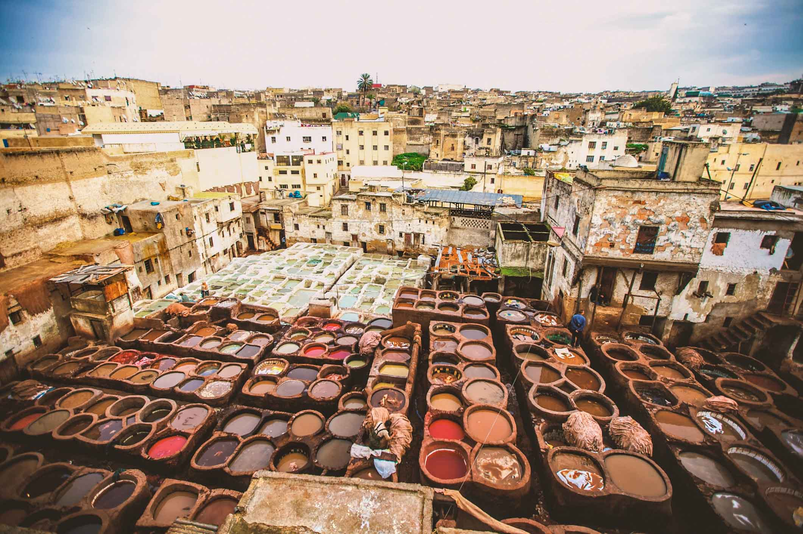

Chauffeur privé au Maroc
Profitez d’un véhicule avec chauffeur pour vos rendez-vous, visites, déplacements personnels ou journées de découverte. Une formule flexible pour circuler selon votre planning.
En savoir plus →Des déplacements confortables et organisés pour les voyageurs, les agences de voyage, les hôtels et les entreprises. Découvrez le Maroc avec un service de transport adapté à vos besoins.
Quick Transport Solutions accompagne les voyageurs et les professionnels dans l’organisation de leurs déplacements au Maroc. Nous proposons des solutions de transport avec chauffeur conçues pour répondre aux attentes des particuliers, des groupes, des agences de voyage, des hôtels et des entreprises.
Transfert depuis l’aéroport, chauffeur privé, excursion, circuit touristique ou déplacement professionnel : chaque demande est étudiée afin de proposer une organisation adaptée à votre programme.
Notre priorité est de vous offrir un trajet agréable, avec une attention particulière portée au confort, à la ponctualité et à la qualité de l’accompagnement.
Contactez notre équipe →
Des prestations variées pour faciliter vos déplacements dans les principales régions du royaume.
Profitez d’un véhicule avec chauffeur pour vos rendez-vous, visites, déplacements personnels ou journées de découverte. Une formule flexible pour circuler selon votre planning.
En savoir plus →
Organisez vos transferts depuis et vers les aéroports du Maroc. Une solution pratique pour rejoindre votre hôtel, votre résidence ou votre lieu de rendez-vous.
En savoir plus →
Des déplacements organisés pour les groupes, excursions et circuits touristiques. Nous étudions le nombre de passagers et le programme pour orienter votre demande.
En savoir plus →
Une solution adaptée aux familles, groupes et professionnels qui souhaitent se déplacer ensemble pour une excursion, un circuit ou un transfert.
En savoir plus →
Nous accompagnons les agences, tours opérateurs et établissements hôteliers dans la coordination des transferts, excursions et déplacements de leurs clients.
En savoir plus →
Facilitez les déplacements liés aux séminaires, congrès, événements et rendez-vous professionnels avec une organisation de transport adaptée.
En savoir plus →Plusieurs catégories de véhicules peuvent répondre à vos besoins, selon le trajet et la composition de votre groupe.

Idéale pour les transferts aéroport, les déplacements privés et les rendez-vous professionnels. Exemples de catégories : Skoda Superb et Mercedes Classe E ou équivalent.

Une option confortable pour les familles et petits groupes qui souhaitent disposer de plus d’espace lors de leurs transferts et circuits.

Pour les excursions, circuits et déplacements collectifs nécessitant une capacité d’accueil plus importante.
Les véhicules, modèles et disponibilités sont à confirmer au moment de votre demande de devis.
Nous organisons des demandes de transport au départ ou à destination de plusieurs villes du royaume.

Transferts, chauffeur privé, déplacements de groupes et trajets professionnels dans la métropole et ses environs.

Des solutions pour les transferts aéroport, les excursions, les visites et les déplacements de voyageurs.

Des trajets adaptés aux visiteurs, institutions et entreprises dans la capitale et sa région.

Transferts et déplacements touristiques ou professionnels dans le nord du Maroc.

Accompagnement des visiteurs et groupes pour leurs déplacements et découvertes de la ville historique.

Reliez Casablanca, Marrakech, Rabat, Tanger, Fès et d’autres destinations selon votre itinéraire.
Nous étudions les besoins de transport des acteurs du tourisme et des organisations qui accueillent ou déplacent des voyageurs au Maroc.
Quick Transport Solutions souhaite rendre chaque déplacement plus simple grâce à une organisation attentive et des prestations adaptées aux différents profils de voyageurs. Nous mettons l’accent sur le confort, la ponctualité et la qualité de l’accompagnement.
Notre approche est basée sur l’écoute de votre besoin : destination, durée, nombre de passagers et type de service souhaité. Ces informations nous permettent d’étudier la solution la plus appropriée.
Parler de votre projet →Retrouvez quelques réponses utiles avant de préparer votre déplacement.
Envoyez-nous votre demande via le formulaire de contact en précisant le trajet, les dates, le nombre de passagers et le service souhaité. Notre équipe pourra étudier les détails et revenir vers vous avec les informations nécessaires.
Vous pouvez nous contacter pour organiser un transfert depuis ou vers les principaux aéroports du Maroc. Indiquez votre vol, votre destination et le nombre de voyageurs afin de faciliter l’étude de votre demande.
Oui, le site présente des offres destinées aux agences de voyage, tours opérateurs et hôtels pour les transferts, circuits et déplacements de leurs clients. Les modalités sont à définir selon chaque besoin.
Les catégories présentées sont les berlines, vans et minibus. Le véhicule disponible dépend de la date, du trajet, du nombre de passagers et des bagages.
Vous pouvez nous contacter pour vos demandes à Casablanca, Marrakech, Rabat, Tanger, Fès et pour des déplacements entre plusieurs villes du Maroc.
Le tarif dépend notamment de la distance, de la durée, de la catégorie du véhicule et du nombre de passagers. Transmettez-nous les détails de votre trajet pour demander un devis personnalisé.
Décrivez-nous votre projet pour recevoir une réponse adaptée.